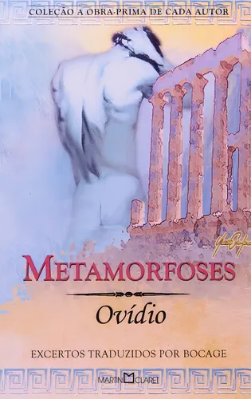
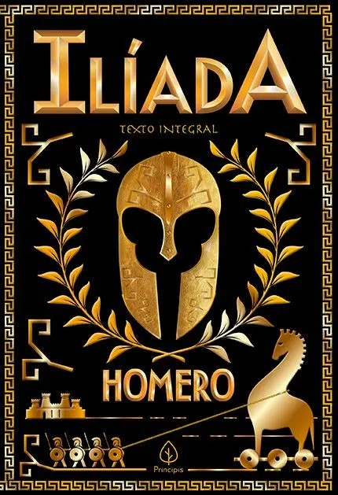
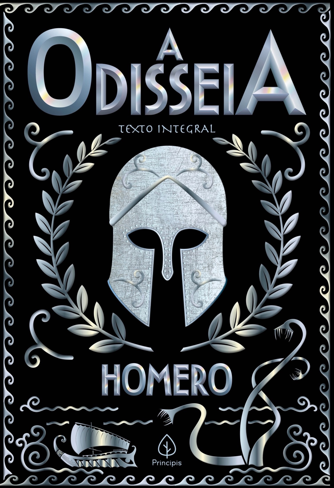

Todo o conhecimento que temos sobre os mitos vem de histórias que foram passadas oralmente pelo povo ou de registros que foram encontrados ao longo do tempo. Este site considera as seguintes fontes: Ilíada, Odisseia e Metamorfoses. Nesta página, eu explico cada uma dessas obras citadas.
Metamorfoses

Metamorfoses é um poema bem longo, com mais ou menos 12 mil versos, escrito por volta do ano 8 d.C. Nele, o autor conta mais de 250 histórias tiradas da mitologia grega, em que a transformação tem algum papel, mesmo que às vezes pequeno.
As histórias não são exatamente conectadas umas com as outras, mas seguem uma ordem cronológica, começando com a criação do mundo (quando o caos vira ordem) e indo até a morte e 'divinização' de Júlio César.
Em várias dessas histórias, aparecem personagens mitológicos que servem de exemplo de como seguir (ou desobedecer) os deuses. Quem faz o certo é recompensado,já quem não faz e é punido,ós dois casos a historia geralmente acaba com alguma transformação que pode ser animal, em planta ou até em algo sobre humano. Só que essas transformações não são o mais importante.
O foco do poema mesmo é a paixão a escrita cheia de emoção que sempre esteve presente na poesia do Ovídio. Inclusive com os deuses, que na escrita dele se tornaram mais humanos do que dinvidades
Ilíada

Composta de 24 cantos e quase 16 mil versos hexâmetros (versos constituídos de seis pés métricos), a “Ilíada” exibe uma precisão, uma beleza e uma unidade temática incomparáveis.
“A ira, Deusa, celebra do Peleio
Aquiles o irado desvario,
que aos Aqueus tantas penas trouxe,
e incontáveis almas arrojou no Hades.”
primeiro paragrafo da Ilíada
Não é à toa que começe com a menção à raiva de Aquiles, filho da deusa Tétis e do rei Peleu:o masi puro odio doh heroi do herói durante a Guerra de Tróia é o que desencadeia toda a ação.Embora a batalha travada entre os gregose os troianos no século 12 a.C. tenha durado dez anos e depois do sequestro da Rainha Espartana Helena pelo príncipe troiano Paris, o poema trata somente dos e o poema trata somente dos eventos que giram em torno de um único episódio ocorrido no penúltimo ano do embate: a rixa entre Agamêmnon, chefe militar dos gregos, e Aquiles. Como afirma o professor Trajano Vieira, a guerra entre gregos e troianos é, no poema, “um aspecto de outra luta mais intensa, travada no interior dos próprios personagens”
Odisseia

Odisseia é um poema épico escrito pelo poeta grego da Antiguidade, Homero.
O poema, criado provavelmente entre os séculos IX e VII a.C., narra aventuras do herói Odisseu, durante 10 anos após a Guerra de Troia, e seu regresso à Ítaca.
Devido aos obstáculos imprevistos e à longa duração da jornada de Odisseu, a palavra odisseia tornou-se sinônimo de narrativa que relata uma série de acontecimentos extraordinários até a concretização de um objetivo. A Odisseia é formada por 24 cantos ou rapsódias, divididas em três partes, embora não haja separação explícita.
Primeira parte: Telemaquia
A primeira parte é chamada “Telemaquia”, por tratar de "Telêmaco", filho de odisseu e Penélope.
se passa durante os capitulos de 1 a 4, onde odisseu só é citado por sua ausência, pois ele deixou Ítaca rumo à Troia para a guerra. Mas após dez anos do fim da guerra, odisseu não voltou.
Telêmaco quer ir buscá-lo. Para isso, tem que lutar contra os 100 pretendentes à mão de sua mãe e ao trono. Por sorte ele consegue escapar com a ajuda da deusa Atena.
Segunda parte: Apólogos
Na segunda parte, que vai dos capitlos 5 a 13, e relata as aventuras de odisseu. Ele mesmo conta uma por uma, falando com o rei dos Faéceos: deixando Troia, vagou sem destino pelo mar, sem as rotas de retorno à Ítaca. Fantásticos acontecimentos desviaram sua trajetória.
O que atrasou sua volta por mais sete anos, foi Calipso, uma deusa que se aixona por ele,e o prende na ilha Ogígia. mas ele libertado desse cárcere, por intervenção de Atena, navega próximo à ilha dos Feáceos, quando naufragou e foi obrigado a nadar até a ilha de Esquéri
Terceira parte: Mnesterofonia
A terceira parte tem como tema a vingança de odisseu sobre os "pretendentes" de sua esposa. De volta à Ítaca, após vinte anos, disfarça-se de mendigo e mistura-se em meio ao povo.
Aos poucos, se inteira das traições cometidas em sua ausência. Gradativamente se deixa identificar, primeiro por seu filho e depois por Penélope.
Ao lado de Telêmaco luta contra os usurpadores, os extermina e reassume o reino de Ítaca.